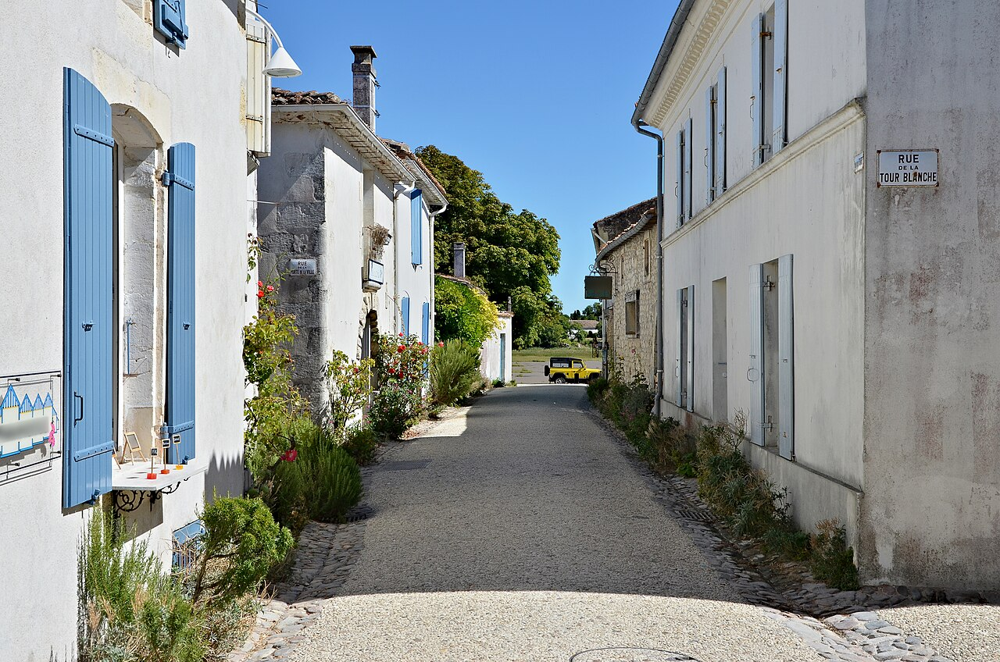

Entrer dans le village à pied
Talmont-sur-Gironde est un village entièrement piéton : laissez votre voiture sur le parking situé à l'entrée, puis poursuivez la visite à pied. Du printemps à l'automne, le stationnement y est payant, avec un tarif forfaitaire à la demi-journée ou à la journée. Cette contribution participe à la préservation du site. Quelques places sont réservées aux personnes à mobilité réduite au plus près de l'entrée du village. Pensez à vérifier les tarifs et les conditions affichés sur place.
Dans les venelles pavées, avancez au hasard des perspectives et des détails des maisons de pierre blanche. Nul besoin de presser le pas : Talmont invite à ralentir.
Retrouver Sainte-Radegonde
L’église Sainte-Radegonde, fièrement campée sur la falaise au bord de l’estuaire de la Gironde, est le point d'orgue de cette promenade. Regardez le paysage grandiose depuis les espaces aménagés et respectez les éventuelles consignes pour vous déplacer sur le chemin de ronde.

Photo : Jebulon · Domaine public
Prendre le temps de regarder
Accordez-vous une pause pour observer les changements de lumière sur l’eau miroitante de l'estuaire. Pour les photos, restez sur les passages publics et respectez la tranquillité des habitants de cette bastide médiévale vivante.
Au fil des ruelles, découvrez les petits artisans d'art, notamment les potiers et créateurs, et profitez des terrasses où déguster une glace ou des produits locaux. Sur la falaise et le long de l'estuaire, ouvrez aussi l'œil : les carrelets, ces cabanes de pêcheurs sur pilotis, font partie des paysages emblématiques de Talmont et de Meschers.
Prolonger vers Meschers, selon vos envies
Pour compléter votre sortie, faites un crochet par les grottes troglodytiques de Meschers-sur-Gironde toutes proches. Renseignez-vous sur les ouvertures et réservations si vous souhaitez visiter ces cavités suspendues dans la falaise.
Avant de partir
Stationnement. Le village est entièrement piéton. Du printemps à l'automne, le parking à l'entrée est payant, au forfait à la demi-journée ou à la journée. Quelques places PMR sont disponibles près de l'entrée. Vérifiez les tarifs et la signalisation sur place.
À prévoir. Prévoyez des chaussures confortables pour marcher sur les pavés et une petite veste contre le vent de l'estuaire.
Pour préparer votre sortie : Royan Atlantique — Office de tourisme de Talmont ↗.